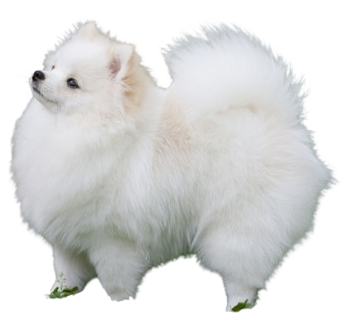

. :*¨ future pets? ¨*: .
 wellll this is a list of dogs and cats i would want to have with you IF they are not stinky
wellll this is a list of dogs and cats i would want to have with you IF they are not stinky 
let's see what we have 


scottish fold  terripoo
terripoo


corgi tuxedo


pomeranian siamese


australian shepherd shih tzu


shiba inu munchkin cat


siberian yorkiepoo


bichon labrador


Husky an Olaf

a Gus
if they are not stinky...
we can get them 


-Ahmed